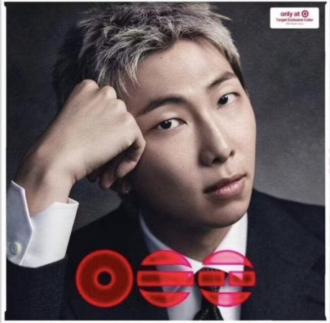
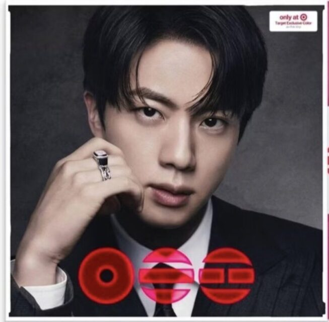
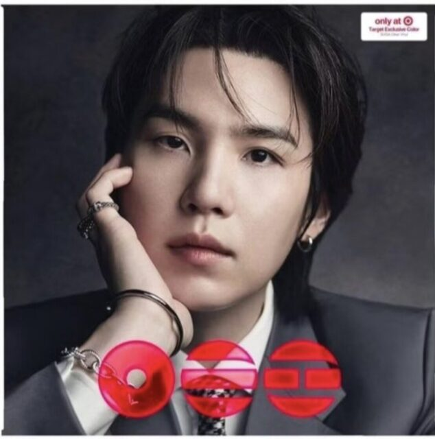
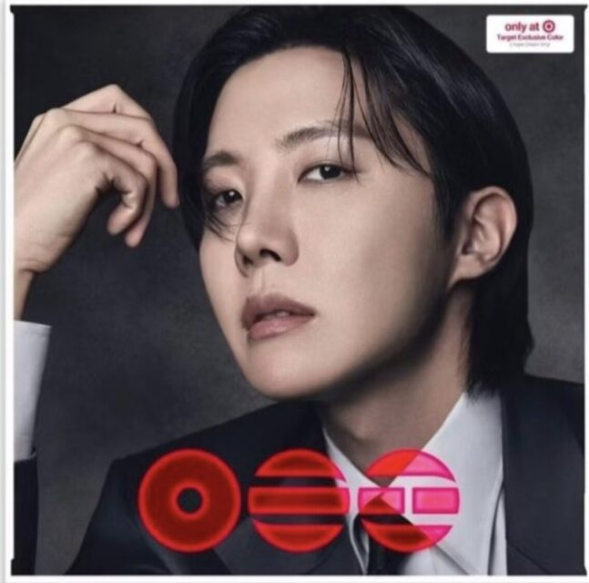
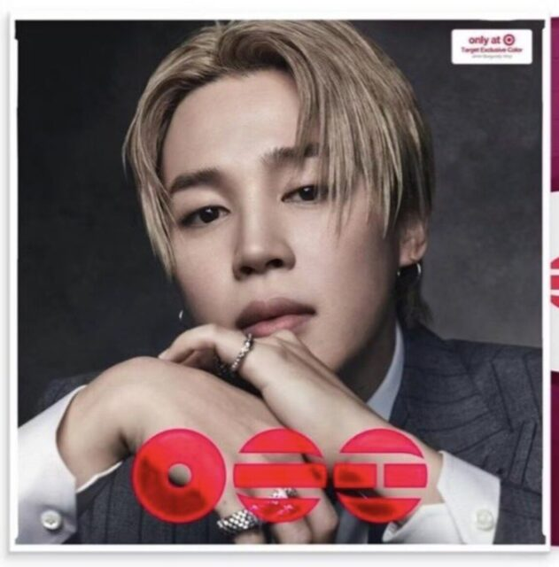
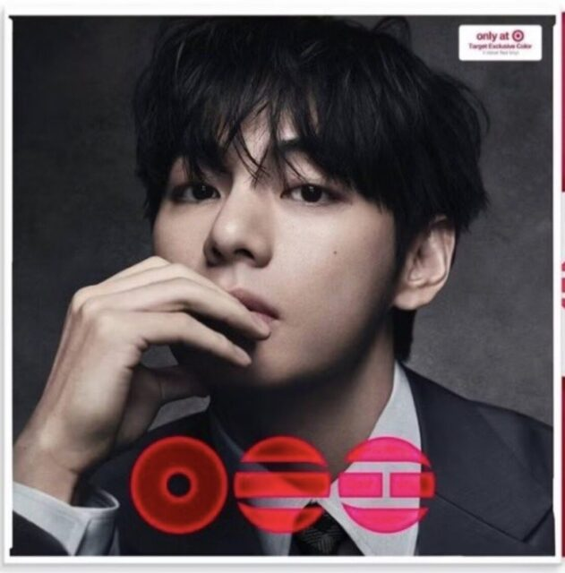
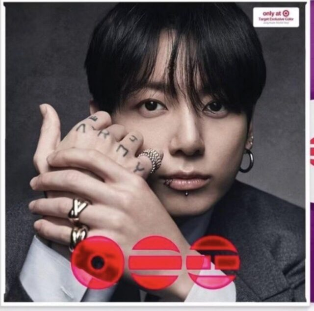
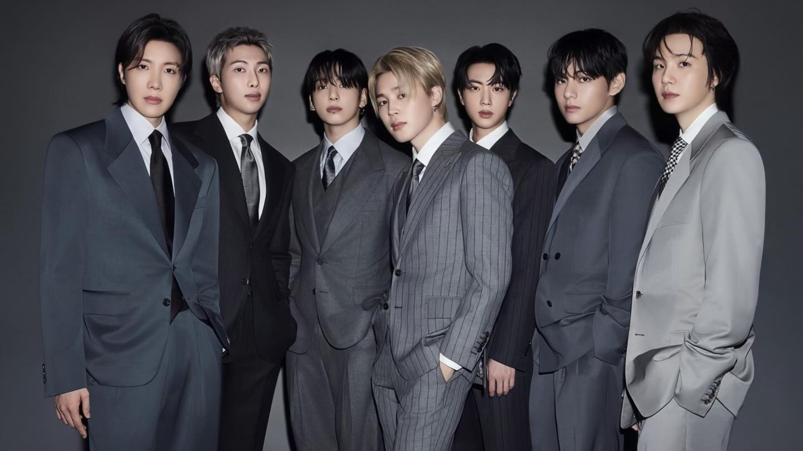

Integrantes de BTS
RM — Kim Nam-joon
RM es el líder de BTS y participa principalmente como rapero. También es reconocido por su trabajo como compositor y por su interés en el arte y la literatura.
Datos interesantes:
-
Ha hablado públicamente sobre su interés por la literatura y el arte.
-
Ha visitado diferentes museos y exposiciones de arte.
-
Es conocido por participar activamente en la composición y escritura de canciones de BTS.
-

Jin — Kim Seok-jin
Jin es vocalista y uno de los integrantes mayores del grupo. Es conocido por su personalidad divertida, su sentido del humor y su estilo vocal.
Datos interesantes:
-
Tiene interés por la cocina y ha compartido contenido relacionado con ella.
-
Estudió en la Universidad Konkuk, donde se especializó en actuación.
-
Su canción “Epiphany” es una de sus interpretaciones solistas más reconocidas dentro de BTS.
-

SUGA — Min Yoon-gi
SUGA es rapero, compositor y productor. Ha participado en la creación de numerosas canciones de BTS y también ha desarrollado proyectos como solista bajo el nombre de Agust D.
Datos interesantes:
-
Comenzó a interesarse por la producción musical desde una edad temprana.
-
Ha trabajado como productor y compositor además de sus actividades con BTS.
-
Como Agust D, ha lanzado proyectos musicales independientes de BTS.
-

j-hope — Jung Ho-seok
j-hope es rapero, bailarín y compositor. Es reconocido por su energía en el escenario y sus habilidades para el baile.
Datos interesantes:
-
Antes de BTS, destacó por sus habilidades como bailarín.
-
Su primer álbum de estudio como solista fue Jack In The Box.
-
Ha participado en diferentes proyectos relacionados con la danza y las presentaciones.
-

Jimin — Park Ji-min
Jimin es vocalista y bailarín. Es conocido por combinar sus habilidades vocales con un estilo de baile expresivo.
Datos interesantes:
-
Estudió danza contemporánea antes de debutar con BTS.
-
Estudió en la Escuela Superior de Artes de Busan.
-
Su álbum solista FACE fue lanzado en 2023.
-

V — Kim Tae-hyung
V es vocalista y es conocido por su tono de voz profundo y distintivo. También ha participado en proyectos relacionados con la actuación y las artes.
Datos interesantes:
-
Participó en el drama coreano Hwarang.
-
Tiene interés por la fotografía y las artes visuales.
-
Ha mencionado su interés por diferentes estilos musicales, especialmente el jazz.
-

Jung Kook — Jeon Jung-kook
Jung Kook es el integrante menor de BTS y participa principalmente como vocalista. También destaca por sus habilidades para el baile y sus proyectos como solista.
Datos interesantes:
-
Participó en el programa Superstar K antes de convertirse en integrante de BTS.
-
Su álbum solista GOLDEN fue lanzado en 2023.
-
Ha mostrado interés por diferentes deportes, especialmente el fútbol.

Los siete integrantes
Cada integrante aporta diferentes habilidades y estilos a BTS, desde el rap y la producción musical hasta el canto, el baile y las artes. Esta combinación forma parte de la identidad del grupo y de su evolución a través de sus diferentes eras.
